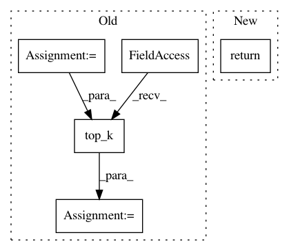

64099a1d2d671705cd9d4a18f9413f4c3569bc86,deepchem/models/tensorgraph/layers.py,NeighborList,get_neighbor_cells,#NeighborList#Any#,3607
Before Change
tiled_centers = tf.reshape(
tf.tile(cells, (1, n_cells)), (n_cells * n_cells, ndim))
// Tile (a, b, c, a, b, c, ...)
tiled_cells = tf.tile(cells, (n_cells, 1))
coords_vec = tf.reduce_sum((tiled_centers - tiled_cells)**2, axis=1)
coords_norm = tf.reshape(coords_vec, (n_cells, n_cells))
closest_inds = tf.nn.top_k(-coords_norm, k=n_nbr_cells)[1]
return closest_inds
def get_cells(self):
After Change
nbr_cells: tf.Tensor
(n_cells, n_nbr_cells)
return self._get_layer(False).get_neighbor_cells(cells)
def get_cells(self):
Returns the locations of all grid points in box.
In pattern: SUPERPATTERN
Frequency: 3
Non-data size: 5
Instances
Project Name: deepchem/deepchem
Commit Name: 64099a1d2d671705cd9d4a18f9413f4c3569bc86
Time: 2019-04-19
Author: peastman@stanford.edu
File Name: deepchem/models/tensorgraph/layers.py
Class Name: NeighborList
Method Name: get_neighbor_cells
Project Name: deepchem/deepchem
Commit Name: 64099a1d2d671705cd9d4a18f9413f4c3569bc86
Time: 2019-04-19
Author: peastman@stanford.edu
File Name: deepchem/models/tensorgraph/layers.py
Class Name: NeighborList
Method Name: get_cells_for_atoms
Project Name: Microsoft/nni
Commit Name: 55b557f17385ca10b8a3e8fb8bbb0d3799906db5
Time: 2019-11-20
Author: 38930155+chicm-ms@users.noreply.github.com
File Name: src/sdk/pynni/nni/compression/tensorflow/builtin_pruners.py
Class Name: FPGMPruner
Method Name: _get_min_gm_kernel_idx